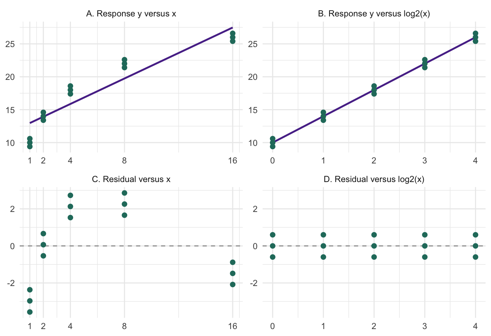
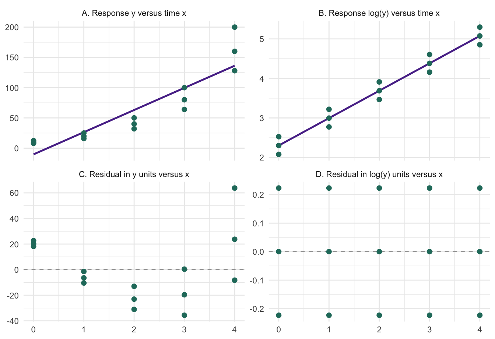
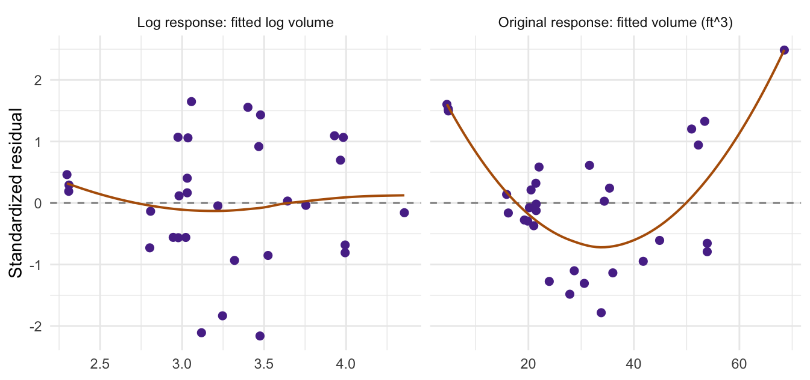

Chapter 6 asked whether individual observations change a fitted model. A different problem arises when many observations follow a pattern that the model misses. We begin with pictures and numbers: when should we change the predictor scale, and when should we change the response scale? After choosing and checking a plausible model form, we introduce variable selection: which candidate terms should remain in the model?
Learning Objectives
By the end of this chapter, students should be able to:
distinguish a curved relationship from a model nonlinear in its parameters;
use curvature and changing residual spread to motivate a transformation;
distinguish transforming a predictor from transforming the response;
interpret predictions after transforming the response;
carry out forward selection, backward elimination, and stepwise selection;
explain ridge and lasso, and choose a penalty using cross-validation;
separate model development from final prediction assessment.
NoteQuick Recap: Tools for Model Development
Chapter 2: OLS fits the mean patterns represented by the design columns.
Chapter 3: coefficient tests and intervals rely on assumptions for a specified model.
Chapter 4: compare nested models on the same observations and response; a lower training SSE alone does not establish better prediction.
Chapter 5: interpret coefficients conditionally, code factors as whole terms, and retain the lower-order terms needed for interactions.
Chapter 6: distinguish response outliers, leverage, and influence; investigate flags and recheck sensitivity when the model changes.
7.1 When does a transformation help?
Start with a fitted straight line and ask two questions: does it follow the center of the responses, and is the spread around that center roughly constant? A systematic curve points to a mean-shape problem. A widening spread points to a variance problem. A transformation may help with one or both, but the choice must match the pattern and the meaning of the variables. NIST’s transformation examples illustrate these two goals.
The following datasets are deliberately constructed to make the differences easy to see. Each has 15 observations, three at each of five predictor values; they illustrate model behavior, rather than provide evidence about a population.
Example 7.1 (A Curved Mean with Similar Spread: Transform the Predictor) Suppose we measure a response at input levels \(x=1,2,4,8,16\). In the top-left panel, the response increases quickly at first and then more slowly. The straight line misses the center of several groups. In the top-right panel, doubling \(x\) becomes a one-unit step on the \(\log_2 x\) axis, and the same observations follow a straight line.
Show R code
library(ggplot2)ch7_curve <-data.frame(x =rep(c(1, 2, 4, 8, 16), each =3))ch7_curve$y <-10+4*log2(ch7_curve$x) +rep(c(-0.6, 0, 0.6), 5)ch7_curve_raw <-lm(y ~ x, data = ch7_curve)ch7_curve_logx <-lm(y ~log2(x), data = ch7_curve)

Figure 7.1: The same 15 observations before and after transforming x. Top: data and fitted lines. Bottom: residuals in the same response units, with matching vertical limits. The curved residual pattern disappears after using log2(x); the response units stay unchanged.
Read the residuals. With the original line, low-\(x\) responses lie below the line, middle responses tend to lie above it, and high-\(x\) responses fall below it again. That shared pattern is not an isolated outlier. After transforming \(x\), every group has residuals \(-0.6,0,0.6\); no curved mean pattern remains in this constructed example.
Put numbers on the change. The group means increase by 4 whenever \(x\) doubles. The sample SD within each group is 0.6, so the motivation here is the mean shape, not increasing spread.
At \(x=4\), the original line predicts 15.87 and the transformed model predicts 18.00, matching the observed group mean. The fitted slope 4 means a doubling of \(x\) adds 4 response units, since \(\log_2(2x)-\log_2(x)=1\).
The training RMSE, \(\sqrt{\mathrm{SSE}/15}\), falls from 2.090 to 0.490. This comparison is meaningful because both fits use the same observations and response scale, and both have two coefficients. It describes training fit, not held-out prediction accuracy. Only the predictor changed; the response and its units did not.
Example 7.2 (Increasing Level and Spread: Transform the Response) Now suppose a positive amount \(y\) is measured at times \(x=0,1,2,3,4\). The middle response doubles at each step, and the three observations spread farther apart in the original units. A straight line with constant error variance is missing both features. Taking logs compresses large values: the top-right panel becomes straight, and the bottom-right residuals have the same spread at every time.
Show R code
ch7_growth <-data.frame(x =rep(0:4, each =3))ch7_growth$y <-10*2^ch7_growth$x *rep(c(0.8, 1, 1.25), 5)ch7_growth_raw <-lm(y ~ x, data = ch7_growth)ch7_growth_logy <-lm(log(y) ~ x, data = ch7_growth)

Figure 7.2: The same 15 positive responses on original and natural-log scales. On the original scale, the center curves upward and the within-time spread grows. On the log scale, a straight line describes the center and the residual spread is constant in this constructed example. Residual magnitudes across the two scales have different units.
Put numbers on the spread. At \(x=0\), the observations are \(8,10,12.5\); at \(x=4\), they are \(128,160,200\). Both triples use the same multipliers, \(0.8,1,1.25\), around their middle value. The absolute spread grows, but the proportional spread stays the same.
x
Responses
Mean response
SD of y
SD of log(y)
0
8, 10, 12.5
10.17
2.25
0.223
1
16, 20, 25
20.33
4.51
0.223
2
32, 40, 50
40.67
9.02
0.223
3
64, 80, 100
81.33
18.04
0.223
4
128, 160, 200
162.67
36.07
0.223
Each SD is computed from the three observations at that time, not from all 15 pooled together. The original-scale SD rises from 2.25 to 36.07, while the log-scale SD stays at 0.223. A nonlinear mean alone would follow the upward curve but would not remove this increasing original-scale variation.
The original line even predicts a negative amount at \(x=0\). The log fit has a different interpretation: one time step adds approximately \(0.693=\log 2\) on the log scale, so exponentiating the fitted value gives the curve \(10\times2^x\). At \(x=2\), that curve gives 40, whereas the observed arithmetic mean is 40.67. Exponentiating an estimated log mean is not the same as estimating an arithmetic mean; Section 7.3 explains the required back-transformation and its assumptions.
Here log() means the natural logarithm; log2() in the previous example made the doubling interpretation especially direct. Do not compare the raw SSE or RMSE of \(y\) with that of \(\log y\): the residuals have different units. Compare model adequacy on each fitted scale and, for prediction, evaluate the same target in common original units.
When should we keep the original scale? If the fitted mean is plausible and residuals show roughly constant spread without a systematic pattern, there may be no reason to transform. A skewed histogram of \(Y\) alone is not enough: regression assumptions concern errors conditional on the predictors. An isolated unusual point calls for the investigation in Chapter 6, not an automatic transformation of all observations.
Transformations are candidates, not mandatory fixes. Curvature may instead be represented by polynomial terms or splines; nonconstant variance may be modeled with weighted least squares. If both shape and spread need attention, choose a meaningful response scale and then recheck which predictor functions are needed. NIST discusses transformation and weighting. In real data, always refit and recheck: these tidy constructed examples do not establish normality, independence, or performance on new observations.
7.2 A curved relationship can still be a linear model
Definition 7.1 (Linear in the Parameters) A regression model is linear in its parameters when it can be written as \(Y_i=\beta_0+\sum_{j=1}^d\beta_j h_j(\mathbf x_i)+\varepsilon_i\), where the functions \(h_j\) are specified independently of the unknown coefficients. The design row is \((1\;h_1(\mathbf x_i)\;\cdots\;h_d(\mathbf x_i))\); the response need not be a straight-line function of the original predictors.
Relationship
Model fitted by least squares
What changes?
Curvature in \(x\)
\(Y=\beta_0+\beta_1x+\beta_2x^2+\varepsilon\)
Add a polynomial column; retain the response scale.
Diminishing change, \(x>0\)
\(Y=\beta_0+\beta_1\log x+\varepsilon\)
Transform a predictor.
Exponential growth, \(Y>0\)
\(\log Y=\beta_0+\beta_1x+\varepsilon\)
Transform the response; specify errors on the log scale.
Power relationship, \(Y,x>0\)
\(\log Y=\beta_0+\beta_1\log x+\varepsilon\)
Transform both variables.
In R, write a quadratic as lm(y ~ x + I(x^2), data = dat); I() makes the square arithmetic. For a log-log model, use lm(log(y) ~ log(x), data = dat). An interaction from Chapter 5 is another constructed column, \(x_1x_2\).
ImportantTransform the statistical model, including its errors
\(Y=a\exp(bx)\exp(\varepsilon)\) becomes \(\log Y=\log a+bx+\varepsilon\). In contrast, taking logs of \(Y=a\exp(bx)+\varepsilon\) does not produce that same additive-error model. Likewise, a saturation model such as \(Y=ax/(b+x)+\varepsilon\) is nonlinear in \(a,b\); reciprocating it changes the errors and may be inappropriate. Some problems need nonlinear least squares or another response model, not forced linearization.
Exercise 7.1 (Linear in Which Sense?) Which can be fitted by lm() using known predictor columns?
\(Y=\beta_0+\beta_1\sqrt{x}+\varepsilon\), with \(x\geq0\).
\(Y=\beta_0+\beta_1x^{\beta_2}+\varepsilon\), with unknown \(\beta_2\).
\(\log Y=\beta_0+\beta_1x+\varepsilon\), with \(Y>0\).
Solution 7.1. Models 1 and 3 are linear in their coefficients. Model 2 has an unknown exponent inside the predictor function; ordinary lm() cannot estimate all three coefficients as written. Model 3 models the conditional mean of \(\log Y\), not directly the conditional mean of \(Y\).
7.3 Choose a transformation, fit, and check again
Motivation: measuring tree volume. Measuring a standing tree’s diameter and height is easier than measuring its timber volume. The trees from Chapter 5 suggest a physical starting point: volume is roughly proportional to cross-sectional area times height, so a power relationship such as \(V\approx aD^bH^c\) may be more natural than an additive straight-line model. The exponents are to be estimated, not fixed by the cylinder analogy. Data documentation.
Apply what the two examples showed.
State the goal and inspect the data. Identify the response units, positive/zero values, measurement process, and a scientifically plausible shape. For prediction, reserve test observations before exploring relationships.
Fit a baseline and inspect residuals. Curvature suggests a mean-shape problem; a fan-shaped spread suggests nonconstant variance. A skewed marginal response alone is not a reason to transform it: regression assumptions concern conditional errors.
Choose a small candidate set. A predictor transformation can address shape while keeping response units. A response transformation changes the target and error model; log responses are natural for positive multiplicative variation.
Refit and recheck. Examine residuals versus fitted values and predictors, a normal Q-Q plot when using normal-model inference, and influential observations. A transformation does not fix dependence or a poor study design.
Interpret and validate. Explain the new coefficients, back-transform appropriately, and compare predictions on a common scale. If choices are learned from data, repeat that learning within training folds.
Example 7.3 (From Tree Geometry to a Log-Linear Model) For the 31 trees, consider
Here \(D\) is diameter in inches, \(H\) is height in feet, and \(V\) is volume in cubic feet. We use all 31 trees to illustrate specification and diagnostics; this is not a held-out performance claim.
Figure 7.3: The same 31 trees on two scales, each with a simple least-squares line using diameter alone. The log-log view motivates a power relationship; the fitted multiple regression above also adjusts for height. This plot does not establish that the transformed model is adequate.
The estimated diameter and height exponents are about 1.983 and 1.117, close to the geometric motivation but not constrained to it. Holding height fixed, multiplying diameter by \(r\) changes the fitted log-volume by \(\hat b\log r\). Under the lognormal model below, the fitted median volume is multiplied by \(r^{\hat b}\). Thus a 1% diameter increase corresponds approximately to a \(\hat b\)% change in that median; the exact percentage is \(100(1.01^{\hat b}-1)\).

Figure 7.4: Standardized residuals from the additive original-scale model and the log-log model, both using diameter and height. The smooth orange line helps reveal remaining mean structure. Inspect each pattern; their fitted-value scales differ, so raw SSE or R-squared values across response scales would not be a fair comparison.
The log model is a candidate to examine, not a guaranteed cure. Both panels still deserve scrutiny. With only 31 observations, a large search over powers and interactions would be hard to justify.
Definition 7.2 (Back-Transformation Under Lognormal Errors) If \(\log Y=\eta(\mathbf x)+\varepsilon\) with \(\varepsilon\mid\mathbf x\sim N(0,\sigma^2)\), then
Exponentiating a fitted log mean therefore estimates a conditional median, not the original-scale mean. A plug-in mean prediction uses an estimate of \(\sigma^2\); it is not an exactly unbiased estimator.
Predicted cubic feet for diameter 15 inches and height 80 feet.
Median volume
Mean volume, lognormal correction
37.82
37.94
With homoscedastic errors independent of the predictors, a less distribution-specific alternative is the smearing estimate \(\exp(\hat\eta)\,n^{-1}\sum_i\exp(e_i)\), where \(e_i\) are training log residuals. A single correction can fail if the error distribution changes with the predictors. Estimate any correction within each training fold when validating.
Other powers. For positive responses, Box-Cox considers \(g_\kappa(y)=(y^\kappa-1)/\kappa\) for \(\kappa\ne0\) and \(g_0(y)=\log y\). Thus \(\kappa=1\) leaves the response shape unchanged, \(\kappa=1/2\) gives a square-root scale, and \(\kappa=0\) gives logs. MASS::boxcox(ch7_raw) profiles the transformation parameter for the specified mean model. Treat it as guidance, then refit and inspect; choosing the power is itself model selection. Box-Cox documentation.
WarningKeep scales and data comparable
Do not rank an lm(y ~ ...) fit against an lm(log(y) ~ ...) fit using their raw SSE, \(R^2\), or unadjusted software AIC. Their responses differ. Compare held-out predictions of the same target in the same units, or use likelihoods expressed on a common response scale with the transformation Jacobian. Logs require positive values; adding an arbitrary constant changes the model. Binary or count responses may instead call for a GLM.
Exercise 7.2 (What Does Exponentiating Predict?) Suppose \(\log Y=2+0.4x+\varepsilon\), with \(\varepsilon\sim N(0,0.25)\). At \(x=0\), give the conditional median and mean of \(Y\). Does increasing \(x\) by one add 0.4 units to the original-scale mean?
Solution 7.2. The median is \(e^2\approx7.39\) and the mean is \(e^{2+0.25/2}\approx8.37\). A one-unit increase in \(x\) multiplies both by \(e^{0.4}\approx1.49\) because the log-error variance is constant. It does not add 0.4 response units.
Recheck influence after transforming. A new response scale changes residuals, and new predictor columns can change leverage. Apply the diagnostics from Chapter 6 to the fitted log model as well.
Example 7.4 (Does One Tree Drive the Power Relationship?) Return to the log-volume model. A wrongly recorded diameter could distort a timber prediction rule, but an accurately measured unusual tree may reveal where the rule needs improvement. First identify observations worth inspecting:
Figure 7.5: Cook’s distances for the log-volume model. Labels mark the three largest values; the dashed 4/n line is only a screening guide. Tree 18 deserves a sensitivity check, not automatic deletion.
Tree
Studentized
Leverage
Cook
18
-2.326
0.126
0.224
17
1.598
0.116
0.106
11
1.703
0.072
0.070
Refit to understand sensitivity. Temporarily omit the largest-\(D_i\) tree and compare the same coefficients; keep the original fit as the reference.
Show R code
ch7_flag <-which.max(ch7_diag$Cook)ch7_log_without <-update(ch7_log, data = ch7_trees[-ch7_flag, ])knitr::kable(data.frame(Term =names(coef(ch7_log)),All_trees =unname(coef(ch7_log)),Omit_flagged_tree =unname(coef(ch7_log_without))),digits =3, row.names =FALSE,col.names =c("Term", "All trees", "Omit flagged tree"))
Term
All trees
Omit flagged tree
(Intercept)
-6.632
-7.185
log(Diameter)
1.983
1.958
log(Height)
1.117
1.261
Tree 18 has \(D_i\approx0.224\). Omitting it changes the diameter exponent from 1.983 to 1.958, and the height exponent from 1.117 to 1.261. The estimated height contribution is more sensitive here; influence can matter differently for different scientific questions. This calculation supplies no evidence of a recording error. Report the sensitivity and investigate the measurement before deciding how to handle it.
Why recheck before selection? One influential observation can make a predictor appear useful or change which term a search retains. Resolve data-quality questions and inspect model form first, then assess whether the selection is stable. Recheck the final selected model as well. Ridge and lasso still use squared-error loss here; shrinkage is not an automatic remedy for outliers. For prediction assessment, all outcome-driven diagnostic and model-development decisions belong within training data, not the held-out test set.
7.4 From candidate terms to variable selection
Transformation asks how a variable should enter the model; variable selection asks which candidate terms to retain. In Section 7.1, replacing \(x\) by \(\log_2 x\) kept the same predictor but changed its relationship with the response. A selection method choosing among only untransformed straight-line terms could not discover that relationship.
Now suppose several predictors are available. Adding columns cannot increase training SSE, even when they represent noise, but estimating more coefficients can make predictions less stable. Selection balances fit against complexity within a scientifically defensible candidate set. Specify plausible transformations and required terms first; if their choice is data-driven, include it in the validation procedure in Section 7.6.
Definition 7.3 (Variable Selection) Variable selection chooses a subset of candidate predictors or model terms using a specified rule. A term may contain several columns, such as a factor. The candidate set, terms that must remain, comparison criterion, and stopping rule are part of the procedure.
Choose the rule before the search. For Gaussian models fitted to the same observations and response, \(\mathrm{AIC}=-2\hat\ell+2k\) and \(\mathrm{BIC}=-2\hat\ell+k\log n\), where \(k=p+1\) includes \(p\) regression coefficients and the variance parameter. Smaller values are preferred. Ordinary \(R^2\) alone cannot stop a search because it never decreases when columns are added. These criteria are scores, not significance levels. R documentation.
Method
Start
One step
Stop
Forward selection
Required terms, often just the intercept
Try each admissible addition; take the greatest score improvement.
No addition improves the score.
Backward elimination
Full candidate model
Try each admissible removal; take the greatest improvement.
No removal improves the score.
Stepwise selection
A specified starting model
Reconsider additions and removals as the fit changes.
Neither move improves the score.
These are greedy searches; different starting points or directions can yield different models. Best subset selection evaluates every allowed subset and finds the best score within that finite set, but \(d\) optional terms can require \(2^d\) fits. Backward elimination requires an estimable starting model with positive residual degrees of freedom for the usual Gaussian criterion.
ImportantProtect model structure
Keep treatment assignments, blocking variables, and scientifically required adjustment terms when the question requires them. Retain parent terms with interactions and lower powers with polynomial terms. Search a multi-level factor as a whole term. R’s formula-based step() respects interaction hierarchy, but it will not infer every scientific constraint, such as retaining x whenever I(x^2) is present.
Example 7.5 (Which Sensor Measurements Help Predict an Outcome?) Imagine a manufacturing outcome and eight candidate sensor readings. We simulate data so the useful predictors are known: \(Y=5+3x_1-2x_2+1.5x_3+\varepsilon\), with independent \(N(0,4)\) errors. Predictors \(x_1,x_2\) are correlated; \(x_4,\ldots,x_8\) have no additional mean contribution. All methods receive the same eight candidates. This is a teaching simulation, not an industrial dataset.
We reserve 40 observations now and fit all searches on the other 120. The candidate set contains only main effects, so no polynomial or interaction hierarchy needs to be imposed in this example.
See the first forward step. Start with an intercept-only model. Fit each of the eight one-predictor alternatives on the same 120 training observations; the table shows the starting model and the three best additions. Use AIC() consistently, and choose the lowest score only if it improves on the starting score.
The first move adds x1. AIC falls from 646.33 to 604.57. The next step must compare additions conditional on that retained term; it cannot simply reuse the remaining one-predictor rankings.
Here all three searches retain \(x_1,x_2,x_3,x_4\). The first three generate the mean, but \(x_4\) is noise: selection can retain a chance association.
step() uses AIC by default; k = log(nrow(ch7_train)) changes the penalty to the BIC-style rule. Fix the analysis rows across all candidates, especially when missing values occur. The trace uses extractAIC(), whose additive constant differs from AIC() for lm; compare scores computed with the same function. Selection documentation.
Exercise 7.3 (Take One Forward Step) The current AIC is 210. Adding \(x_2\), \(x_3\), or \(x_4\) gives 207, 209, or 212. Which move is made? At the next step, the best available AIC is 207.4. Continue or stop? Would a different answer prove that one variable has no scientific role?
Solution 7.3. Add \(x_2\), producing the largest AIC decrease. Stop at the next step because 207.4 is worse than 207. This is a conditional search result under the chosen candidates and score, not proof that an excluded variable has no scientific role.
7.5 Shrinkage: ridge, lasso, and elastic net
Subset selection makes discrete include-or-exclude decisions. Regularization instead penalizes coefficient size: it accepts some bias to reduce sensitivity to the sample. Lasso can also produce exact zeros.
Definition 7.4 (Penalized Least Squares) Let \(\mathbf x_i\) contain \(d\) candidate predictor columns, excluding the intercept, and let \(\boldsymbol\beta=(\beta_1,\ldots,\beta_d)\). On \(n_{\mathrm{tr}}\) training observations, estimate the intercept and slopes by minimizing
The intercept is not penalized. Ridge uses \(\alpha=0\), lasso uses \(\alpha=1\), and elastic net uses \(0<\alpha<1\). Larger \(\lambda\) puts more weight on shrinkage. At \(\lambda=0\) the objective is OLS; uniqueness still depends on the design rank.
Why can lasso give zeros? Near zero, a squared penalty becomes nearly flat, while an absolute-value penalty keeps a nonzero slope on each side of its corner. A small improvement in fit may therefore fail to move a lasso coefficient away from zero. Ridge usually reduces its magnitude continuously instead.
Method
Main behavior
Interpretation
Ridge
Shrinks slopes, usually without exact zeros.
Useful when many correlated columns carry information.
Lasso
Can set slopes exactly to zero.
A sparse prediction rule; correlated predictors can compete for selection.
Elastic net
Combines both penalties.
Can retain correlated predictors together; both \(\alpha\) and \(\lambda\) need a selection rule.
Why scaling matters. Converting a predictor from meters to millimeters changes its coefficient by a factor of 1,000. Standardize predictor columns using training data so the penalty does not favor a unit convention. In glmnet, standardize = TRUE performs this within each fit, including CV training folds, while predictions use the original input units. An ordinary lasso selects columns; it does not automatically preserve an entire factor or interaction hierarchy. Package documentation.
Choose the penalty on training data. Divide the 120 training observations into five folds. Fit on four and score predictions on the fifth, repeating for all folds. lambda.min minimizes average CV error; lambda.1se is the largest penalty within one estimated standard error of the minimum. The latter is a simplicity rule, not a hypothesis test. A single cv.glmnet() call tunes \(\lambda\) at a fixed \(\alpha\). CV documentation.
Install glmnet once with install.packages("glmnet") if needed. Continue the same sensor example:
Figure 7.6: Lasso coefficient paths from the sensor training data. Larger penalties move slopes toward zero. The three true signal predictors are colored; the other five are gray. A path displays fitted coefficients, not confidence intervals.
Figure 7.7: Five-fold CV within the sensor training set. Bars show plus or minus one estimated CV standard error, not confidence intervals for individual responses. Dashed: minimum-error lambda. Solid: the more regularized one-SE choice used below.
From one column to many. Ridge remains computable with more columns than observations; ordinary full-model OLS then cannot have full column rank. Lasso can give sparse fits in that setting, but it does not guarantee recovery of the true variables. Here we focus on a modest candidate set so the classical searches and penalized fits are directly comparable.
7.6 Evaluate the complete procedure
Our choices are now fixed: AIC for the three subset searches and the one-SE rule for ridge and lasso. Evaluate all five on the same untouched 40 observations. Add full-model OLS and a training-mean baseline for context. For \(m\) test observations, \(\mathrm{RMSE}=\{m^{-1}\sum_i(y_i-\hat y_i)^2\}^{1/2}\), in response units.
Ridge and lasso have slightly smaller test RMSE than full OLS on this split. Lasso keeps a small coefficient for the noise predictor \(x_4\), while setting \(x_5,\ldots,x_8\) to zero. Equal search results are possible, and no method must win on every split. Report the comparison without revising the methods after looking at test outcomes. If choosing a winning method from this table, its same test error is no longer an independent final assessment of that choice.
ImportantValidate the search, not just its final formula
If CV is used to evaluate a selection procedure, rerun the entire variable search inside each training fold. Selecting on all observations first and then cross-validating only the selected formula leaks information. Learned transformations, imputation, scaling, and tuning follow the same rule. Final performance claims require an untouched test set or appropriately nested resampling.
Prediction and inference answer different questions. A selected coefficient is not automatically a scientific discovery; ordinary fixed-model \(t\) tests and confidence intervals do not automatically remain valid after selection or lasso followed by OLS refitting. Likewise, a good predictive score does not establish a causal effect.
Exercise 7.4 (Find the Leakage) A student selects predictors using all 160 outcomes, then splits the observations and reports test RMSE. Another student reserves 40 observations first and runs selection only on the other 120. Which analysis gives an honest held-out assessment of its fitted procedure? Does that make its selected-coefficient p-values valid?
Solution 7.4. Only the second keeps test outcomes out of model development, provided the test results are not used to revise the procedure. That separation assesses prediction; it does not repair ordinary post-selection coefficient inference.
7.7 Summary
What do you see or need?
What should you try?
What must you check?
Curved mean, roughly constant spread
A predictor transformation or suitable polynomial terms; keep \(Y\) in its units when appropriate.
Does the residual mean pattern disappear? Interpret the new predictor scale.
Positive responses with proportional variation
A log response, possibly together with transformed predictors.
Recheck shape and spread; distinguish the original-scale mean from an exponentiated log prediction.
Many plausible candidate terms
Forward, backward, or stepwise selection with a stated score and required terms.
Preserve factors and hierarchy; selected terms and ordinary p-values are not automatic discoveries.
Unstable estimates or many correlated columns
Ridge for shrinkage; lasso when sparsity is also useful; consider elastic net.
Scale within training data and tune penalties by CV.
A final claim about prediction
Evaluate the entire fixed procedure on untouched observations.
Use the same target and units; learn transformations and selection within training folds.
A transformation is unnecessary when the existing model is adequate for the purpose. A curved relationship can still be linear in its coefficients. Whatever the chosen form, recheck the Chapter 6 diagnostics.
The next design unit asks which terms must be retained because of randomization, blocking, and the scientific question. That provides a useful boundary for automatic selection. Dose-specific comparisons from Chapter 5 are retained in Contrasts and Estimable Comparisons (Optional).
7.8 Practice Problems
Exercise 7.5 (Practice: Specify, Select, and Assess)
A positive outcome grows approximately exponentially with time. Write a multiplicative-error model and its log-linear form. Explain why an additive original-scale error would change the argument.
A quadratic mean fits better than a straight line. Does it cease to be a linear regression model? State the columns of its design matrix.
A backward search considers removing a three-level factor. How many coefficient restrictions are imposed when there is an intercept and no interaction? Why should its indicators be treated together?
Explain why ridge is not generally a variable-selection method and why lasso selections can vary among correlated predictors.
Compare lambda.min with lambda.1se. Where should the folds, transformation choices, and final test observations enter the procedure?
A tree exceeds the \(4/n\) Cook’s-distance guide. A student deletes it and runs forward selection. Explain what is missing from this procedure and propose a sensitivity analysis.
Solution 7.5.
\(Y=a\exp(bt)\exp(\varepsilon)\) gives \(\log Y=\log a+bt+\varepsilon\). Logging \(a\exp(bt)+\varepsilon\) does not yield this additive log-error structure.
It remains linear in the coefficients; the columns are \(\mathbf 1\), \(\mathbf x\), and the vector of squared predictor values.
Two restrictions. The two columns represent one factor; selecting them separately makes the search depend on the chosen reference coding.
Ridge usually leaves all slopes nonzero. Correlated predictors offer similar information, so small sample changes can alter which one lasso retains.
lambda.min minimizes CV error; lambda.1se prefers the largest penalty within one estimated SE of that minimum. Choose transformations and tune models within training data/folds, then evaluate the fixed procedure on an untouched test set.
A screening flag does not establish an error. Check the measurement and model specification, compare scientifically relevant estimates and predictions with and without the tree, and examine whether the selected terms change. Explain any exclusion and retain an honest test set.